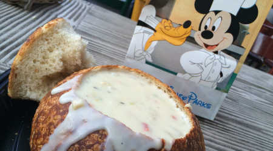

Where to get the best grub
It doesn't matter what you're in the mood for, Disneyland as it all. Snacks, meals, sweet treats you name it, they got it. Here's a list of the best food and where to get it:
- Corn Dogs at the Red Wagon on Main Street.
- Fried Chicken at the Plaza Inn at the end of Main Street
- Any type of pasta at Pizza Planet in Tomorrowland
- Mickey-shaped waffles at Carnation Cafe on Main Street
- Dole Whip at the Tiki Room in Adventureland
- Monte Cristo sandwiches at the French Quarter restaurants in New Orleans Square
Sshhh...it's a secret!
If you want to impress your friends back home or your friends that you go to Disneyland with, you can tell them all about the secret menu food items that Disneyland has to offer. Here's a list of the name of the items and where to get them:
- "Firefly” Corn Chip Chili Cheese Pie with Jalapeños - Main Street Refreshment Corner
- Main Street "Floats" - Gibson Girl Ice Cream Parlor
- Galactic Burger "Alien Style" - Galactic Grill
- Fish 'n' Chips - Stage Door Café
- The Hidden Burrito - Rancho del Zocalo
- Kalua Pork Sandwich - Bengal Barbecue